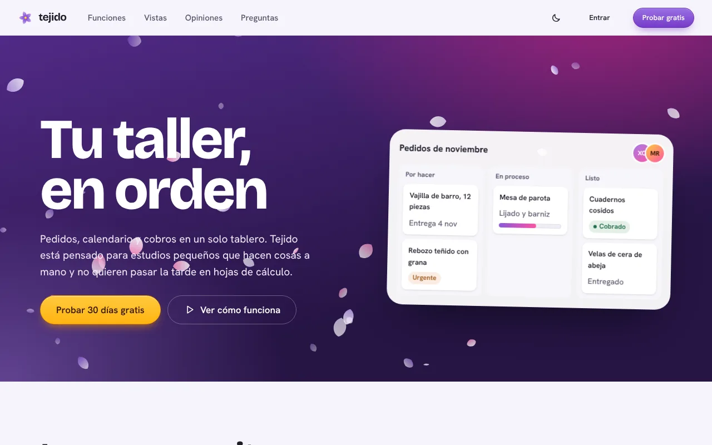
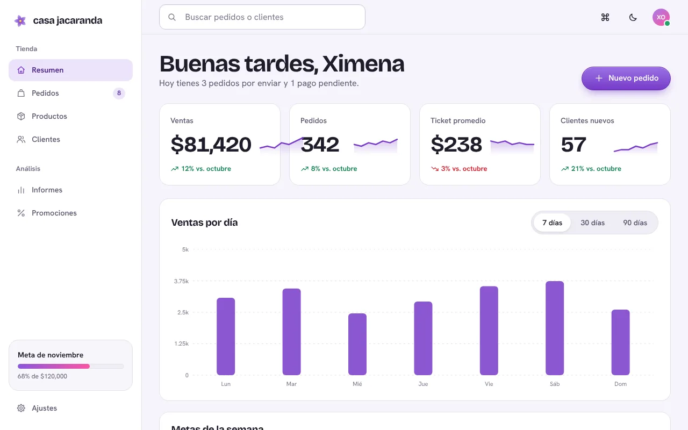
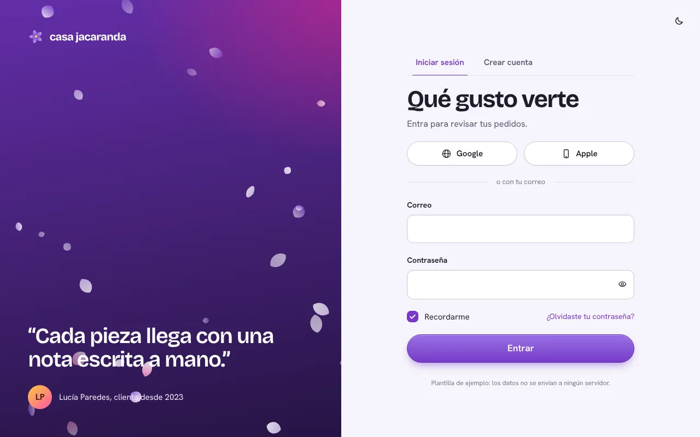
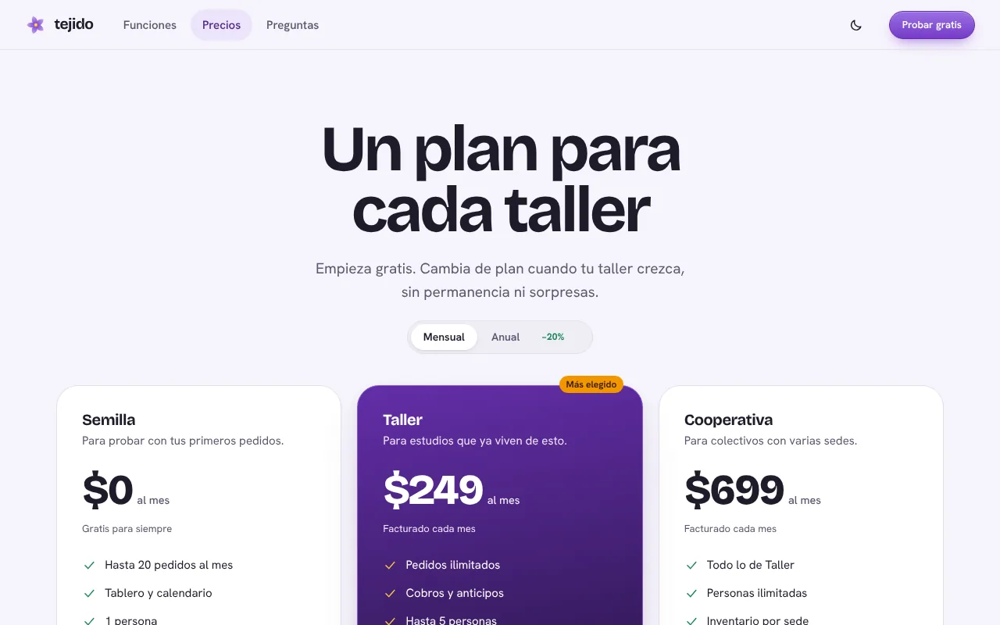

Interfaces con alma
Componentes, iconos, colores, tipografías y plantillas en una librería modular. Pega dos líneas de CDN y construye con clases, sin compilar nada.
- Iconos
- 164iconos
- Componentes
- 60componentes
- Colores
- 7paletas
- Plantillas
- 15plantillas
<link rel="stylesheet" href="{{CDN}}/src/assets/styles/julieta.css">
<script type="module" src="{{CDN}}/src/assets/scripts/julieta.js"></script>Eso es todo. Los iconos, el tema oscuro y los componentes interactivos ya funcionan.
Todo lo que hay, en un solo mapa
Cada pieza vive en un único lugar y todo el catálogo se busca desde una sola caja. Si existe en Julieta, lo encuentras aquí, sin duplicados.
Pruébalo aquí mismo
Nada de capturas: estos controles son los componentes reales de la librería.
Acciones y avisos
Tema y ajustes
Visitas esta semana
Equipo del proyecto
- XOActivaXimena Ortega
- MRAusenteMateo Ruiz
- LPLucía Paredes72%
Usa todo, o solo lo que necesites
Cada archivo es un módulo independiente. Carga la librería completa con una línea, o importa únicamente el CSS de los botones o el JavaScript de las notificaciones.
Los estilos usan @layer: los tuyos siempre ganan, sin!important.Los módulos JS son ES modules y resuelven sus rutas desde su propia URL. Sin build, sin dependencias, sin frameworks obligatorios.
<link rel="stylesheet" href="{{CDN}}/src/assets/styles/julieta.css">
<script type="module" src="{{CDN}}/src/assets/scripts/julieta.js"></script><link rel="stylesheet" href="{{CDN}}/src/assets/styles/tokens.css">
<link rel="stylesheet" href="{{CDN}}/src/assets/styles/base.css">
<link rel="stylesheet" href="{{CDN}}/src/assets/styles/buttons.css">import { toast } from "{{CDN}}/src/assets/scripts/toast.js";
toast({ type: "success", title: "Publicado", text: "Tu página ya está en línea." });Doce plantillas en cuatro categorías
Elige un tipo de página y recorre todas las opciones que tiene. Todas funcionan de verdad: validan formularios, ordenan tablas y recalculan precios.

Landing de productoHéroe con pétalos, características y preguntas frecuentes.
Panel de controlMétricas, gráficas y una tabla que se ordena y filtra.
Acceso y registroValidación en español y contraseña visible a demanda.
PreciosPlanes con selector mensual y anual.Empieza con dos líneas
Copia el fragmento de instalación, elige un componente y míralo funcionar. El resto se aprende con el buscador: presiona / en cualquier página.